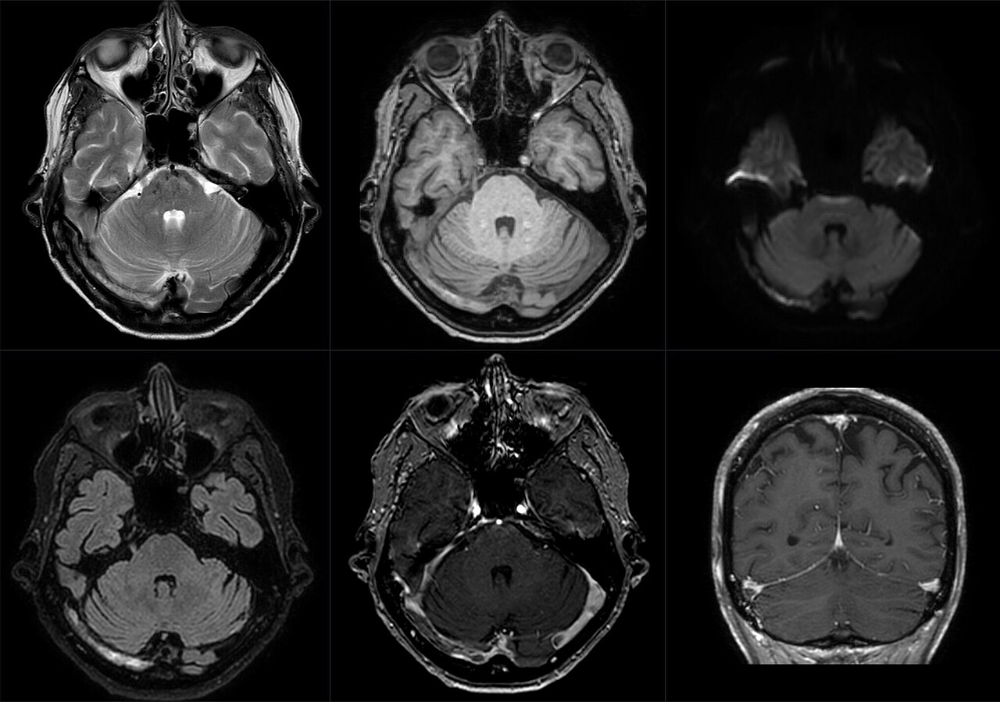

Ficha del catálogo
Trombosis venosa cerebral
- Sistema
- Nervioso
- Modalidad
- RM
- Región
- Senos durales y venas cerebrales
- Dificultad
- Avanzado
La trombosis venosa cerebral es la oclusión de senos durales o de venas corticales y profundas, con predominio en mujeres jóvenes, embarazo y puerperio, anticoncepción hormonal, deshidratación, infección de vecindad y estados protrombóticos. Se manifiesta con cefalea persistente, crisis convulsivas, déficit focal o hipertensión intracraneal.
Técnica
Resonancia magnética con T1, T2, FLAIR, difusión, secuencia sensible a susceptibilidad y venografía por resonancia, con o sin contraste. La venografía por tomografía es una alternativa rápida y muy fiable en el contexto urgente.
Qué observar
- Ausencia del vacío de señal normal en el seno afectado
- Señal anómala del contenido del seno según el tiempo de evolución del trombo
- Defecto de repleción en la venografía con contraste
- Edema o infarto que no respeta territorios arteriales
- Componente hemorrágico subcortical asociado al infarto venoso
- Dilatación de venas colaterales y de las venas medulares profundas
Hallazgos
El seno trombosado pierde el vacío de flujo normal y muestra contenido con señal variable, característicamente hiperintenso en T1 y en T2 en la fase subaguda. En la venografía aparece un defecto de repleción con ausencia de opacificación del segmento afectado y, cuando el trombo es central y la pared realza, se dibuja un anillo de contraste alrededor del defecto. En el parénquima se ven áreas de edema, a menudo con hemorragia subcortical, cuya distribución no corresponde a ningún territorio arterial.
Perlas
La distribución del daño parenquimatoso es la clave diagnóstica, porque un edema o una hemorragia que cruzan fronteras arteriales obligan a estudiar el drenaje venoso antes de invocar otras causas. Conviene además revisar las venas corticales aisladas, cuya trombosis puede pasar inadvertida si solo se examinan los senos mayores.
Diagnóstico diferencial
- Infarto arterial hemorrágico
- Respeta un territorio arterial definido y afecta corteza y sustancia blanca de forma coherente con ese territorio.
- Hemorragia intracerebral primaria
- Localización profunda o lobar sin edema circundante desproporcionado y con permeabilidad venosa conservada.
- Encefalopatía posterior reversible
- Edema vasogénico bastante simétrico de predominio parietooccipital, con senos permeables y contexto de hipertensión o de fármacos.
- Tumor con edema
- Existe una masa con realce y el edema es vasogénico digitiforme, sin defecto de repleción venoso.
Simuladores
- Hipoplasia o asimetría congénita de un seno transverso
- Granulaciones aracnoideas que producen defectos de repleción redondeados
- Artefactos de flujo lento en la venografía por técnica de tiempo de vuelo
Por modalidad
- TC
- El seno trombosado puede verse espontáneamente hiperdenso y la venografía con contraste muestra el defecto de repleción con alta fiabilidad.
- RM
- Caracteriza la edad del trombo, detecta trombosis de venas corticales por susceptibilidad y valora mejor el daño parenquimatoso.
Protocolo
Secuencias basales de encéfalo con difusión y susceptibilidad, seguidas de venografía por resonancia; ante duda se realiza venografía con contraste, que es más sensible para segmentos con flujo lento. En urgencias la venografía por tomografía resuelve el diagnóstico con rapidez.
Clasificación
Se describe por el segmento afectado, con compromiso del seno sagital superior, de los senos transverso y sigmoide, del seno recto y del sistema venoso profundo, y por la presencia o ausencia de lesión parenquimatosa asociada. La afectación del sistema profundo con edema talámico bilateral es la forma de peor pronóstico.
Errores frecuentes
- Interpretar una hipoplasia de seno transverso como trombosis
- Excluir el diagnóstico con un estudio sin venografía
- No estudiar el drenaje venoso ante hemorragia lobar en paciente joven

trombosis venosa cerebral senos durales infarto venoso venografía hipertensión intracraneal puerperio